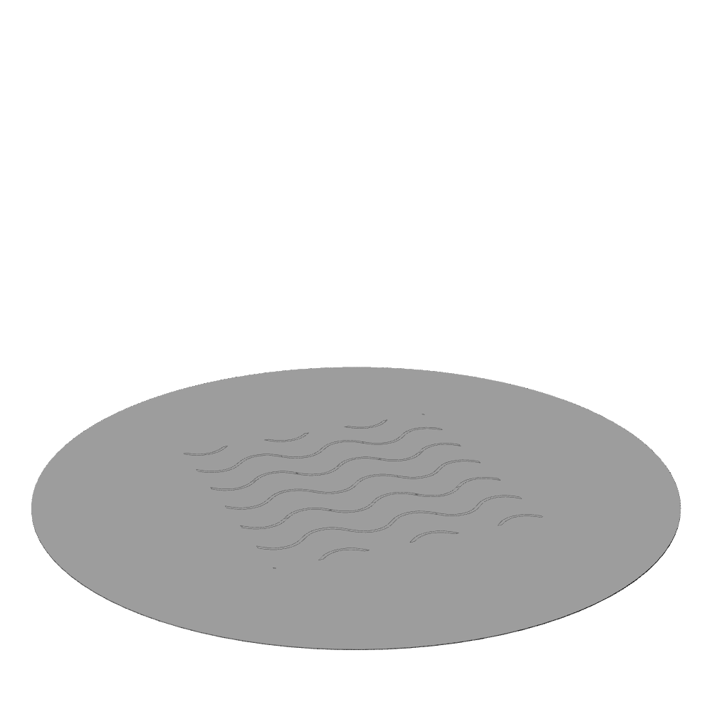
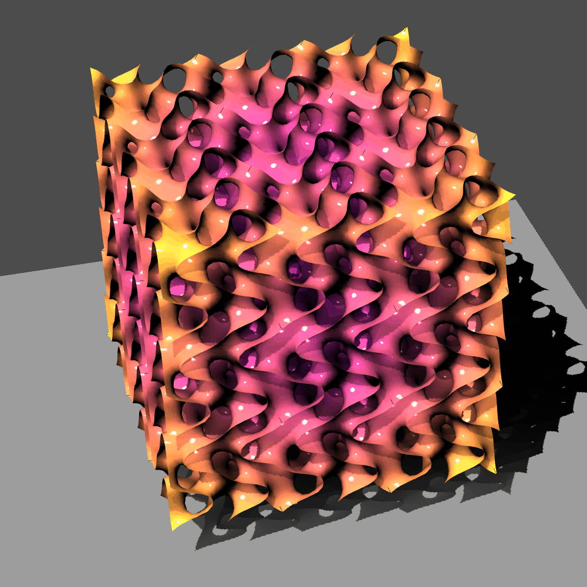
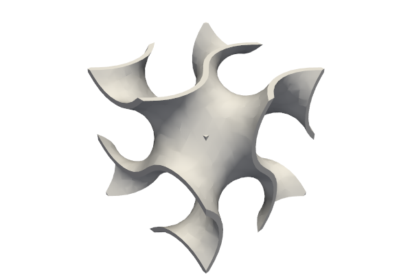

Overview
Microgen is a simple python library that helps to generate and mesh microstructures.
Here are the main features:
- Entirely written in Python 3, built on PyVista for implicit (F-rep) shapes and mesh I/O, with optional Open CASCADE via cadquery-ocp-novtk for BREP CAD output (pip install 'microgen[cad]').
- Implicit-first: every shape carries a scalar field, and microgen.Phase is field-first — Phase.from_shape() lets you mesh, sample, and partition without ever touching CAD.
- It allows to generate simple reinforcement geometries (spheres, cylinder, ellipsoids, …) to generate virtual composites microstructures.
- Three-dimensional Voronoi tessellation allows to simulate the response of granular materials and polycrystalline metals.
- Regular mesh and periodic mesh are implemented using Gmsh, remeshing using Mmg is also implemented.




Brief examples
import microgen
geometry = microgen.Tpms(
surface_function=microgen.surface_functions.gyroid,
offset=0.3
)
shape = geometry.sheet
shape.plot(color='white')
